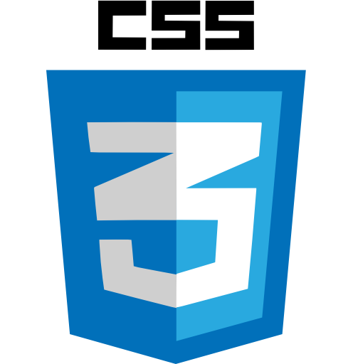
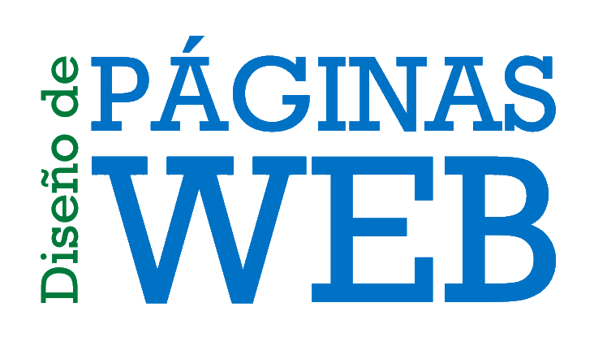
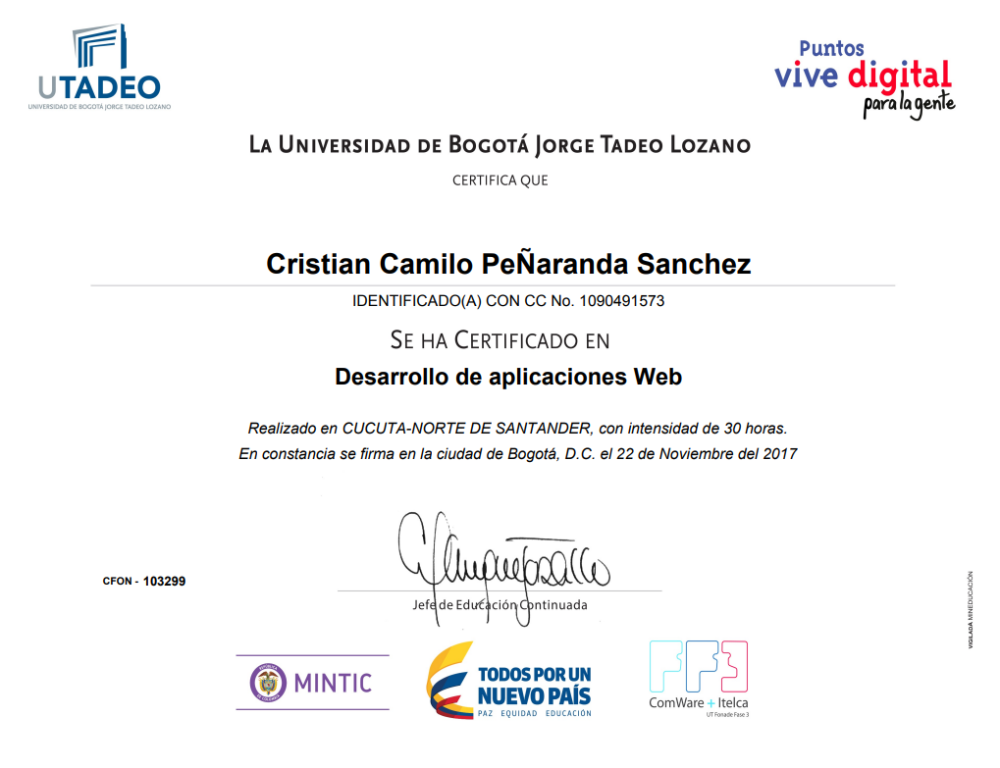

CONOCIMIENTOS
 Java es un lenguaje de programación y una plataforma informática comercializada por primera vez en 1995 por Sun Microsystems. Hay muchas aplicaciones y sitios web que no funcionarán a menos que tenga Java instalado y cada día se crean más. Java es rápido, seguro y fiable. Desde portátiles hasta centros de datos, desde consolas para juegos hasta súper computadoras, desde teléfonos móviles hasta Internet, Java está en todas partes. |
 CSS sirve para definir la estética de un sitio web en un documento externo y eso mismo permite que modificando ese documento (la hoja CSS) podamos cambiar la estética entera de un sitio web… ese es precisamente el poder de CSS, en otras palabras, el mismo sitio web puede variar totalmente de estética cambiando solo la CSS, sin tocar para nada los documentos HTML |
 HTML5 es la última versión de HTML. El término representa dos conceptos diferentes: |
 El diseño web es una actividad que consiste en la planificación, diseño e implementación de sitios web. Un diseñador web tiene que ver con cómo crear y desarrollar un pagina web así también como los clientes interactúan con ella. |
 Adobe Photoshop es un editor de gráficos desarrollado por Adobe Systems Incorporated y utilizado principalmente para el retoque de fotografías y gráficos. Traducido al español significa “taller de fotos” y es el líder mundial dentro del mercado de las aplicaciones de edición de imágenes en general. |
 AngularJS es un framework de JavaScript de código abierto, mantenido por Google, que se utiliza para crear y mantener aplicaciones web de una sola página. Su objetivo es aumentar las aplicaciones basadas en navegador con capacidad de Modelo Vista Controlador (MVC), en un esfuerzo para hacer que el desarrollo y las pruebas sean más fáciles. |
 El curso “Introducción al desarrollo de aplicaciones Web”, está orientado a la creación de aplicaciones web básicas, mediante el conocimiento de lenguajes destinados a este propósito y la tecnología asociada, todo a través de clases fundamentalmente prácticas, en las que no se requiere un conocimiento previo avanzado de este tema. |
Este curso le permitirá desarrollar competencias en: |
Entiende e implementa Git y Github en tu flujo de trabajo. Son el estándar de la industria para control de versiones de código y tus proyectos. De cero a avanzado. |